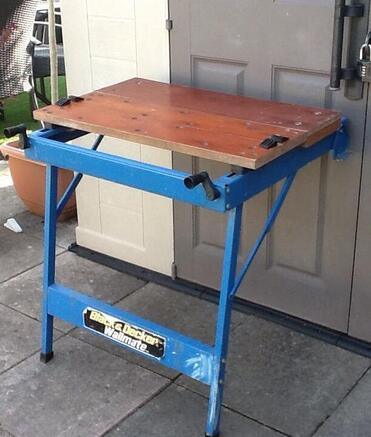
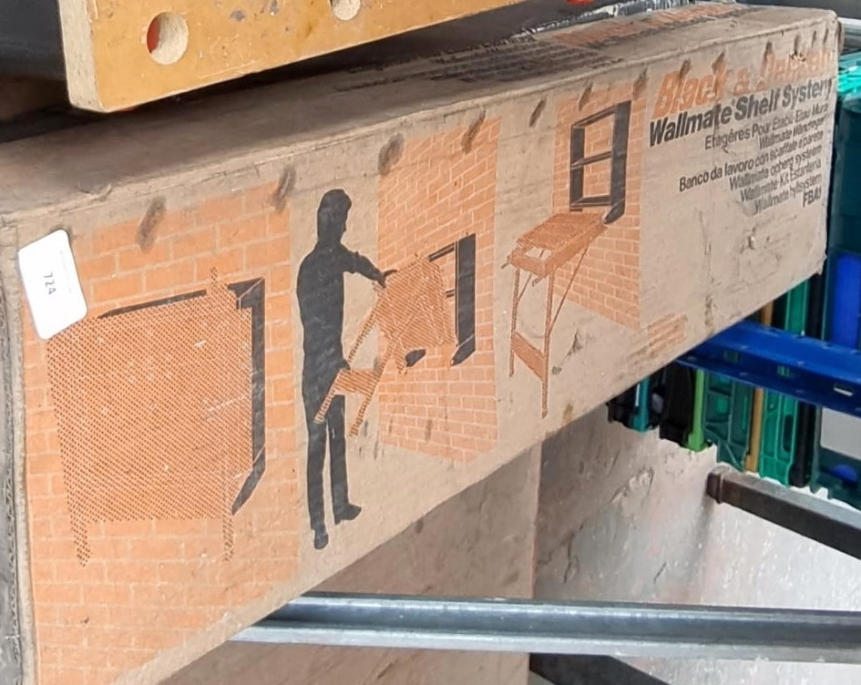
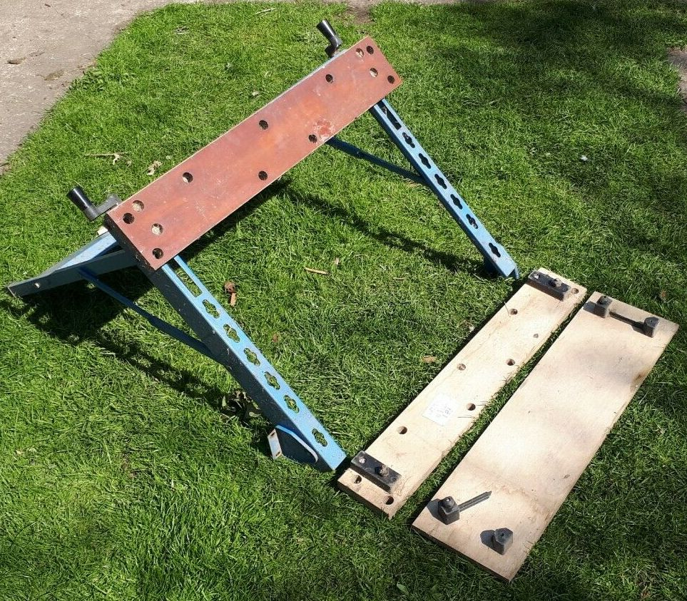
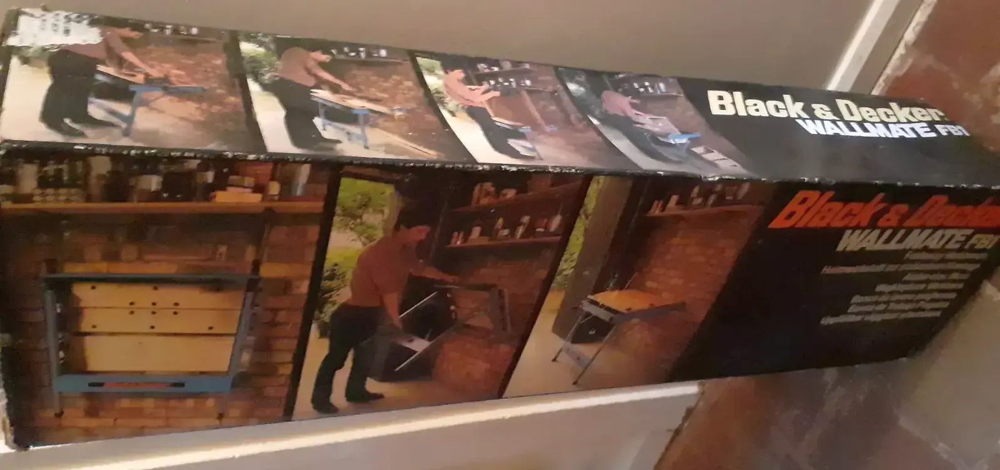

Unlike other Workmates that sit on the floor or on a bench, the UK model Wallmate Foldaway Workbench FB1 mounts to a wall. It has two legs on the front, while the rear attaches to the wall with screws through a pair of swiveling brackets. When not in use, you can lift the front legs off the floor, pivoting the whole unit upward out of the way to fold against the wall. It is similar in concept to the North American model 79-021 Drop Leaf Workmate, but much larger in size and different in operation. It was introduced to the UK market in October 1981 and was available on closeout for half price or less by 1983. The "FB" in the model number appears to be for Foldaway Bench.
It has a three-piece vise-jaw assembly measuring 30"x17-1/2" that has the standard Workmate tapering clamp action, but on the Wallmate the front jaw is the one that moves, more like a typical vise. The vise opens to a maximum of 15" when you remove one of the vise boards. It uses the standard Workmate swivel pegs for surface clamping. When folded up against the wall it is only 5" deep.
There is an accessory for the Wallmate called the Wallmate Shelf System FBA1, which consists of a matching blue steel unit with two shallow shelves the same width as the Wallmate that you mount to the wall just above where you want the Wallmate. The brackets of the Wallmate then attach to the lower part of the Shelf System. When you fold the Wallmate upward for storage, it covers the front of the shelves so the contents are inaccessible.
As far as I can tell the Wallmate was never sold in the U.S. or Canada by Black & Decker dealers; it was a UK-only model. However, I came across an unusual twist. In 1983 when the Wallmate went on clearance sales in the UK, a liquidator called Peddler's Mart in the United States somehow obtained some Wallmates along with the Shelf Systems. They sold the two together in some Northeast states, including New York and New Jersey, for $39.95.
Black & Decker Wallmate FB1 and Wallmate Shelf System




The carton for the Wallmate Shelf System


You can see the connectors that hold the vise jaws in place


The Wallmate carton